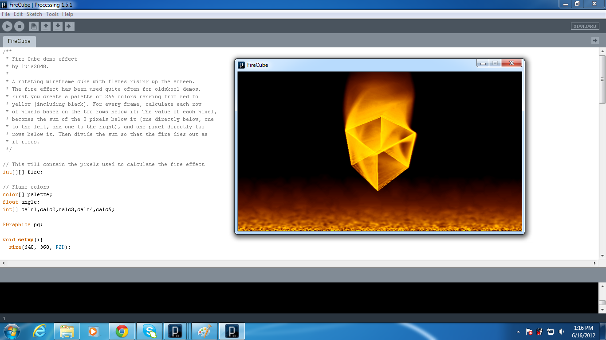
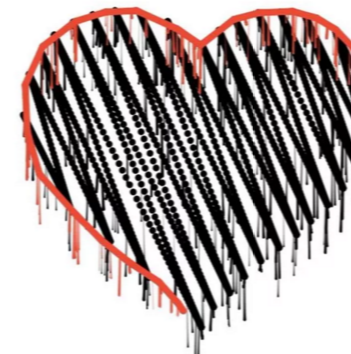

Processing 语言是专门为开发者中的艺术家而创建的，由MIT Media Lab的两个家伙所开发，一开始，他们的初衷只是想让开发变得有趣一些，正是这样一个单纯的目的，造就了Processing语言的艺术气质，令它成了一些Geek眼中的宝贝。当然，它也并不一定是Geek的专利，因为随着它越来越被广泛传播，现在玩这个被称为电子艺术和可视化设计，许多真正的艺术家也参与到了其中。 Processing 语言的网站在： http://processing.org/ 。 在它的展示厅（Exhibition）页面上你能看到许多令人吃惊和好玩的图形和动画，难以置信的是这些东西都是通过很简单的程序代码“画”出来的，是的，有时候很难相信。比如下面这幅图片就是接合Twitter的数据用Processing画的。

还有下面这个：

看到这里，您是不是有马上一试的冲动呢？那么，下面，跟我来一起开玩吧。
一、安装Processing开发环境
Processing的开发包可以从下面这个地址下载： http://www.processing.org/download/，在这个页面上有各个平台（Mac, Windows, Linux）的版本下载。解压后，双击里面的Processing执行文件，即可开玩，
- Windows版本的需要执行，展开的文件夹中的processing.exe文件
- MacOS 下的需要首先双击打开dmg文件，然后将其中的Processing 图标拖到Application目录中。
- Linux下是.tgz压缩包，你需要在console中（或者xwindows下）执行解压并运行:
- tar fxz processing-xxx.tgz
- cd processing
- ./processing
二、开始进行Processing编程之旅
运行processing后，可以看到它的IDE窗口环境：

在文件(File)菜单下有许多例子(Examples)，你可以点击任何一个打开看看人家是怎么写的.
比如里面的 Effects/FireCube，就用很简单的代码画出一个着火的立方体的动画：

Processing 的程序分为两个主体函数：setup, draw。其中setup是可以省略的。如果不需要动画或交互，那么draw函数也可以省略(在draw函数中的代码会一遍遍的重复执行直到你关闭或者停止)，直接在IDE编辑器中写代码绘制，比如，画一个圆：
**ellipse**(50, 50, 80, 80);
这个函数的意思是在坐标(50,50)的地方，绘制宽度和高度都是80的椭圆。点击运行按钮，就可以看到结果:

size函数用户设定绘制窗口的大小和方式，如果没有指定绘制方式，则默认为JAVA2D的模式，processing支持的方式有：JAVA2D, P2D, P3D, OPENGL以及PDF（如果是PDF方式，后面还需要一个pdf文件名的参数）。
下面是鼠标移动绘制圆形的交互代码，可以粘贴到编辑器执行看看。
void **setup**() {
size(480, 120); //设置窗口大小
smooth();
}
void **draw**() {
if (mousePressed) {
fill(0);
} else {
fill(255);
}
ellipse(mouseX, mouseY, 80, 80);
}
停止执行按 按钮。
按钮。
特别的，使用beginRecord函数你还可以将绘制过程记录到pdf文件，当然首先要引用支持pdf的库：
import processing.pdf.*;
beginRecord(PDF, "line.pdf");
ellipse(200, 200, 50, 50);
endRecord();
Processing 有非常多的库，使得你绘制和交互非常的方便，你可以在这里学学习各种库的使用： http://www.processing.org/reference/libraries/ 下面的动画来自ani库中的 valentine_drips_player的demo.

这些扩展库文件你只需要放到 Processing Sketchbook location 下的libraries下面即可：
To find the Processing sketchbook location on your computer, open the Preferences window from the Processing application and look for the “Sketchbook location” item at the top. Copy the contributed library’s folder into the “libraries” folder at this location. You will need to create the “libraries” folder if this is your first contributed library.
Processing 的 pbox2d 物理引擎库，下面是经典的物理引擎堆箱子的例子(btw: 把size函数的显示方式改为P2D会提升性能)：

还有更好玩的，如果你是超级懒人，觉得下载这么大一个东东（最新测试版要100多M）实在是太烦了，OK，那就玩javascript好了，最近processing的姊妹站点 processingjs.org 刚发布了processing.js v1.1.0，这个站点的目标是用javascript来玩processing。嗯，无需要java，无需要一大堆的文件，只要一个processing的javascript库，然后就可以玩。
下面是用prcessing.js做的可视化互动数据图:
 Comments visualisation
Comments visualisation Contributors visualisation
Contributors visualisation Activity visualisation
Activity visualisation
值得一提的是，除了在本地玩之外，Processing也提供了一个WebIDE：processingjs，通过这个在线的IDE，您只需要往页面的TextArea编写程序，即可运行一个在线的实例，相当方便快捷。
更多演示在这里，你需要支持html5的浏览器：
- Contributors — a tree graph visualisation linking commenters and blog post authors.
- Activity — a rippling visualisation of comment activity on the wiki. Based loosely on the Apple Arabesque screensaver.
- Comments — a falling bar-graph visualisation of comments by blogpost. Based very much on a Flash visualisationby Digg, but reimplemented in JS.